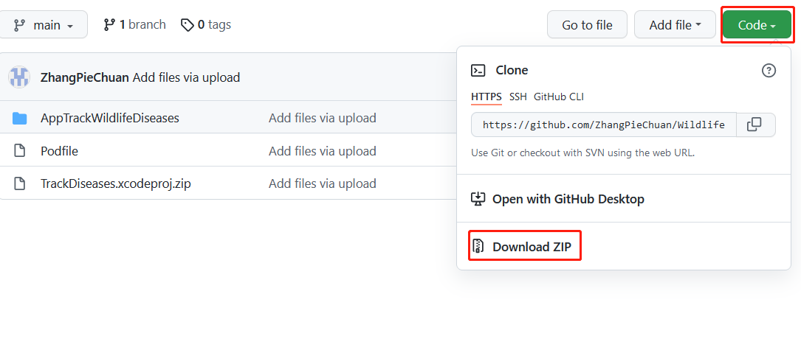
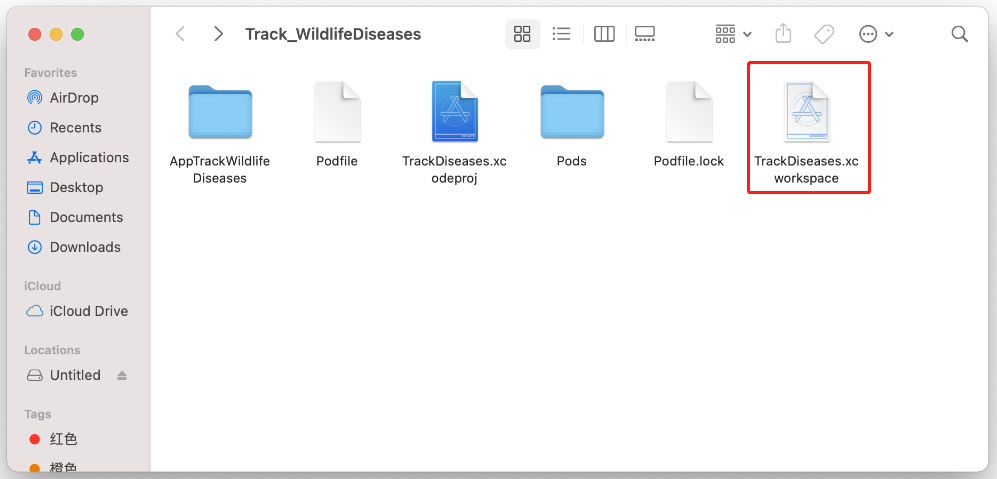
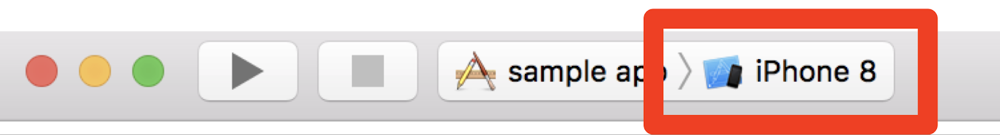
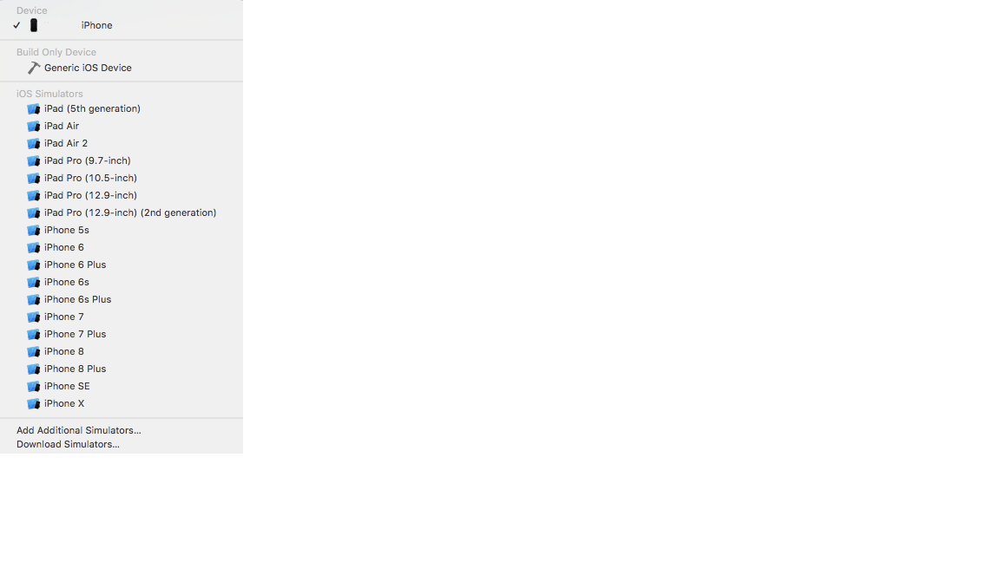
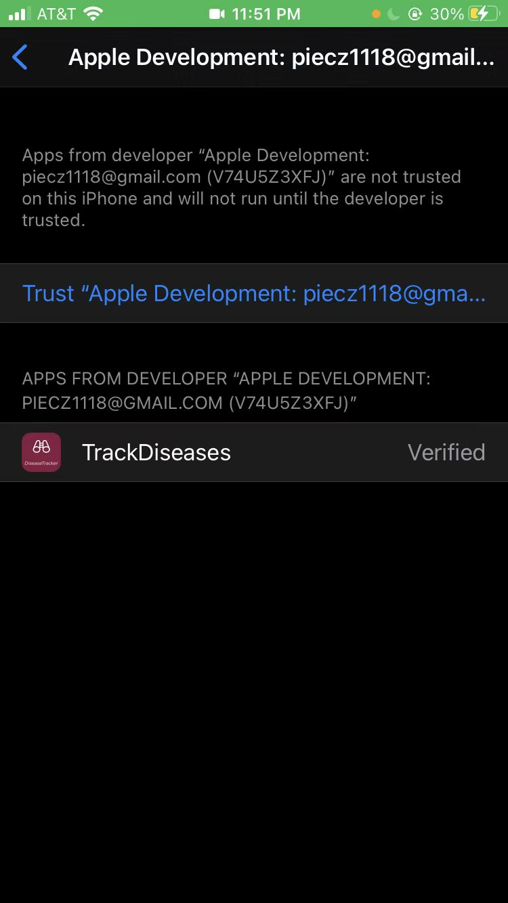
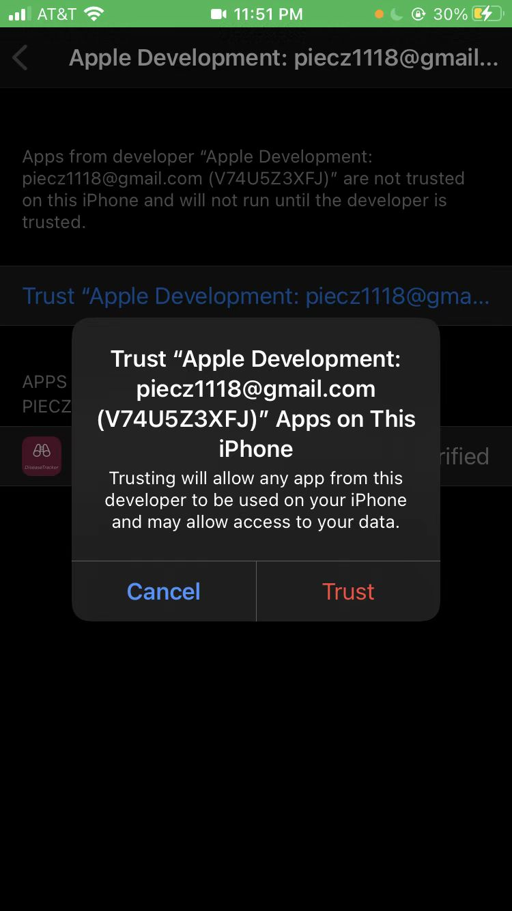

Our app is not published on the App store, so you need to install it differently than usual, you will need a Mac in order to install our app.
First, you need to download Xcode, you can find it in App Store, it is a mandatory software for IOS software developing
While it is downloading, go to https://github.com/ZhangPieChuan/WildlifeTrackerApp click on the green code button then click download ZIP. When finished, unzip the file in desktop

Next, we need to configure the project's dependence, open Terminal in LaunchPad > Other, inside it, write:
cd Desktop/WildlifeTrackerApp-main
sudo gem install cocoapods
when finished type:
pod init
pod update
When the previous step is finished, open the folder of the source code and open TrackDiseases.xcworkspace, you will see Xcode open up
Connect your iphone to your mac then on the top of the Xcode window, click on the tab right to the stop button, then choose your iphone from the list then click play button
 when finished, you can see the app on your phone

The Last step is to change your phone setting, go to setting > general > Device Management > Apple Development: piecz1118@gmail.com, then click Trust it will pop up a alert, chose trust, then the app will be ready to use
 